16/07/2025 — Có phải luôn tốt nhất là kích hoạt ngay khi đã tin chắc OMI cấp trong một thế giới STEMI?
Bản dịch tiếng Việt của bài "Is it Always Best to Activate when Convinced of Acute OMI in a STEMI World?" – Dr. Smith’s ECG Blog. Giữ nguyên toàn bộ 12 hình ảnh của bản gốc.

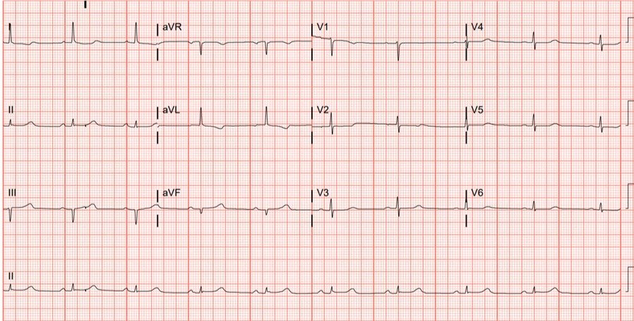
Tác giả: Emerson Floyd MD (Biên tập: Grauer, Meyers, Smith)
Smith: Chẳng phải đáng buồn sao khi chúng ta phải làm nhà tâm lý học để cố thuyết phục các bác sĩ can thiệp làm điều đúng đắn?
Emerson bắt đầu CA BỆNH: Tôi được cho xem điện tâm đồ sau đây lúc 0345 sáng khi đang đi dọc hành lang sang phòng một bệnh nhân khác.

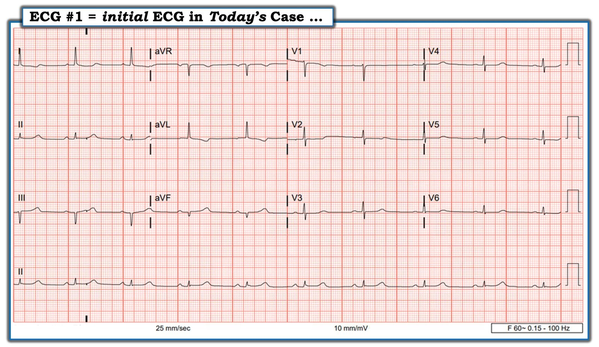
Nghi ngờ tắc động mạch vành cấp của tôi lập tức tăng lên ngay với điện tâm đồ ban đầu này. Chuyển đạo aVL là chuyển đạo đáng lo ngại nhất, và cùng với các chuyển đạo I và V2 — vẽ nên một bức tranh rõ ràng về tổn thương thành dưới kèm thay đổi soi gương ở vùng bên cao và vùng “sau”.
(Nói thêm bên lề, lần đầu tiên tôi nhớ mình thấy một điện tâm đồ như thế này là tại một buổi nói chuyện của Dr. Stephen Smith mà tôi dự vào năm thực tập (Intern). Rất nhiều ca OMI thành dưới tinh tế. Tôi nhớ đã nhận được câu trả lời chỉ một từ khi hỏi một bác sĩ nội trú năm trên rất giỏi nghĩ gì về buổi nói chuyện: “Đáng sợ.” Nhưng từ đó tôi đã học được, và nay dạy lại cho các bác sĩ nội trú làm việc cùng tôi — rằng thay đổi soi gương thường biểu hiện trước cả tổn thương ở vùng bị nhồi máu trên các chuyển đạo chi.)
Smith: điều làm điện tâm đồ này khó không phải là nó có biểu hiện nhồi máu (MI) hay không (rõ ràng là có), mà là liệu đó có phải OMI CẤP hay không: một nhồi máu thành dưới cũ có thể cho sóng Q như thế này kèm một ít ST chênh lên tồn lưu (phình thất trái). Nhưng khi có sóng Q thành dưới, việc phân biệt phình thành dưới với OMI thành dưới cấp khó hơn nhiều so với phân biệt OMI thành trước với phình thất trái thành trước. Trong ca này, như Emerson sẽ bàn, sóng T quá lớn (đầy đặn) để có thể là tổn thương cũ.
Queen biết điều đó:

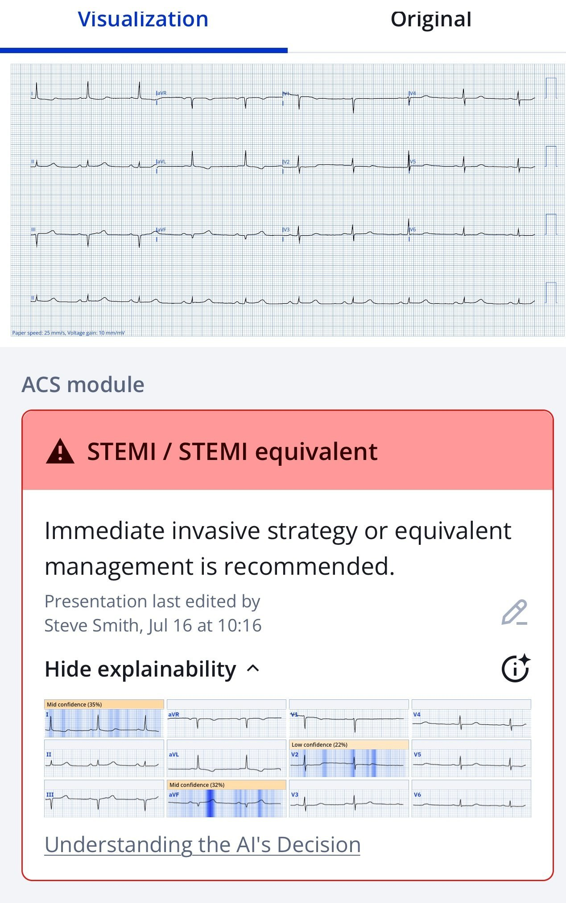
Emerson tiếp tục: Tôi bỏ dở việc đang làm và đi thẳng tới phòng bệnh nhân này. Khi gặp bà, tôi càng tin chắc hơn rằng bà đang bị tắc động mạch vành cấp: Cách mô tả tốt nhất tôi có thể nói về dáng vẻ của bà là hơi xanh tái, với vẻ mặt chịu đựng, khó chịu nhưng sợ hãi.
Bệnh nhân kể với tôi rằng bà thức giấc lúc 2 giờ sáng vì đau ngực lan lên vai trái, và từ đó cơn đau trở nên liên tục. Bà chỉ có tiền sử phù bạch huyết, không hút thuốc, không có đái tháo đường (DM) hay tăng huyết áp (HTN) và không dùng thuốc hằng ngày.
Tôi nói với bệnh nhân rằng tôi rất nghi ngờ bà đang bị nhồi máu cơ tim và các điều trị quan trọng nhất là tái thông mạch và aspirin (thứ sau bà đã được dùng rồi). Tôi nói rằng tôi dự kiến sẽ kích hoạt phòng thông tim, nhưng tôi không chắc một bác sĩ tim mạch can thiệp sẽ nhận bà dựa trên điện tâm đồ ban đầu.
Lúc đó — tôi làm siêu âm tại giường, cho thấy EF trên 50% và không có rối loạn vận động thành rõ rệt (Có thể có giảm động nhẹ thành dưới — nhưng tôi không chắc chắn về điều này). Tôi nói với bệnh nhân rằng chúng tôi sẽ ghi hai điện tâm đồ tiếp theo cách nhau 10 phút.
XIN NHẤN MẠNH: Tôi có cảm xúc lẫn lộn về chiến lược của mình. Tôi đã tin chắc rằng bệnh nhân này cần thông tim — và vì thế tự nhủ rằng tôi sẽ kích hoạt phòng thông tim trong vòng nửa giờ tới bất kể các điện tâm đồ liên tiếp cho thấy gì. Một phần trong tôi muốn kích hoạt ngay lập tức.
- Dù đã nói như trên — tôi có lợi thế được gặp trực tiếp bệnh nhân tại giường để báo cho bà biết nghi ngờ của mình.
- Tôi đang làm việc tại một cơ sở cộng đồng, không có bác sĩ nội trú hay fellow.
- Tôi muốn có thể thuyết phục bác sĩ tim mạch can thiệp — người mà tôi sẽ đánh thức lúc 4 giờ sáng — đưa bệnh nhân này vào phòng thông tim trước cả khi họ gặp bệnh nhân.
- Tôi sợ rằng bác sĩ tim mạch can thiệp sẽ đề nghị đo troponin nhiều lần nếu tôi kích hoạt ngay chỉ dựa trên điện tâm đồ này. Điều này có thể thực sự gây hại cho bệnh nhân.
- Ngoài ra — với cơn đau ngực bắt đầu lúc 2 giờ sáng, rất có thể troponin lấy lúc 330 sáng sẽ âm tính, làm chậm việc điều trị cho bà thêm 3 giờ nữa. Trong khoảng thời gian đó, bà sẽ có nguy cơ không chỉ mất một lượng đáng kể cơ tim — mà còn đột tử do loạn nhịp.
- Tôi nghĩ tới một ca tương tự mà tôi biết rõ — ca đó đến viện với điện tâm đồ này (tôi trình bày dưới đây, với sự cho phép của Mubarak Alhatemi):

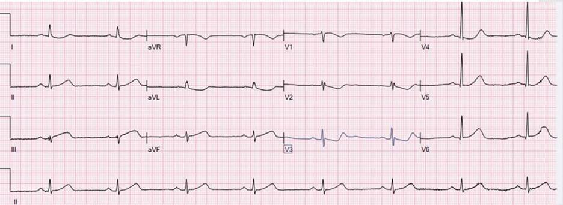
Smith: Điện tâm đồ này từ ca của Mubarak Alhatemi không hề tinh tế. Trái lại — nó chẩn đoán 100% OMI cấp dưới-sau (và bên = V6).
Smith: Đây là một điện tâm đồ tinh tế hơn nhiều, nhưng vẫn chẩn đoán OMI dưới-sau: Phụ nữ khoảng 30 tuổi có điểm HEART bằng 0, EDACS bằng 2, máy tính đọc điện tâm đồ “Bình thường”, và troponin ban đầu < giới hạn phát hiện

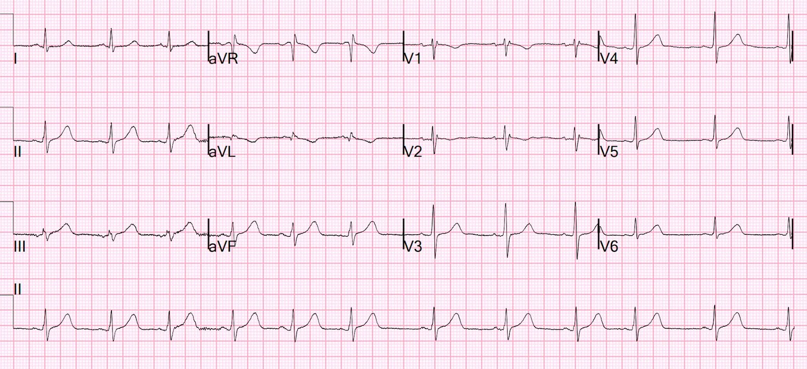
Queen thậm chí cũng nhận ra ca này:

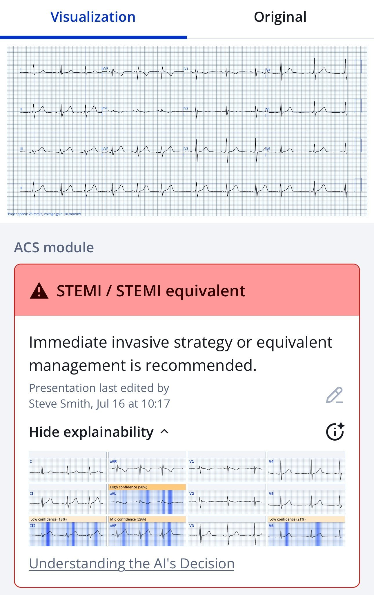
Ứng dụng PMcardio for Individuals 3.0 mới nay đã có mô hình Queen of Hearts mới nhất và khả năng giải thích của AI (bản đồ nhiệt màu xanh)! Tải ngay cho iOS hoặc Android. https://www.powerfulmedical.com/pmcardio-individuals/ (Drs. Smith và Meyers đã huấn luyện mô hình AI này và là cổ đông của Powerful Medical.)
Ca bệnh hôm nay tiếp diễn:
Emerson: Lý do tôi nghĩ tới ca trên của Mubarak Alhatemi — là vì những gì xảy ra ngay sau đó trong ca ấy — đó là dải nhịp dưới đây được ghi trong khi bệnh nhân vẫn đang nối với máy điện tâm đồ! Xét tới sự khởi phát đột ngột rung thất (VFib) trong ca đó — tôi biết rằng với ca hôm nay, tôi cần tìm ra chiến lược tốt nhất trong một “thế giới của tiêu chuẩn STEMI” — để tối đa hóa lượng cơ tim cứu được và giảm thiểu nguy cơ cho bệnh nhân của tôi.

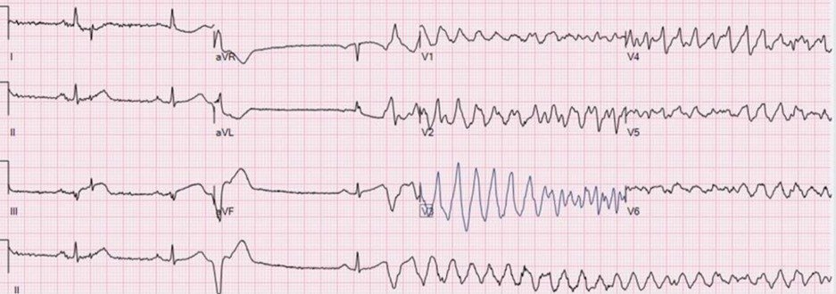
Ca bệnh hôm nay tiếp diễn:
10 phút sau khi ghi điện tâm đồ #1 — một điện tâm đồ ghi lại được ghi:

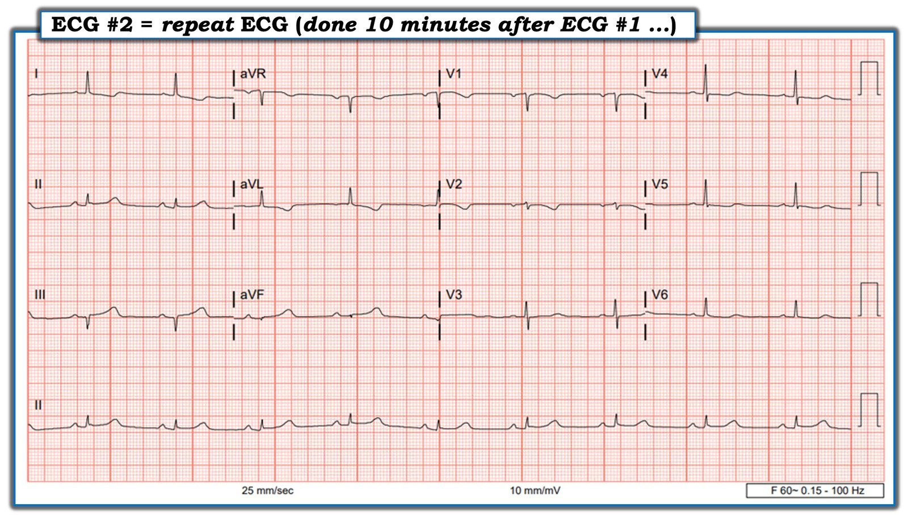
Theo “con mắt” của tôi — điện tâm đồ #2 thể hiện sự tiến triển trong 10 phút kể từ khi ghi điện tâm đồ #1. Ở các chuyển đạo III và aVF, tỷ lệ giữa QRS và diện tích dưới sóng T đang tăng lên. “Tính tương xứng” (proportionality) này là một khái niệm nền tảng trong việc định nghĩa sóng T tối cấp (dựa trên công trình của Smith và Meyers). Tôi nhận thấy ở chuyển đạo III — giờ đây tôi thậm chí có thể đặt vừa phức bộ QRS đã giảm biên độ vào trong diện tích dưới sóng T ( = một mẹo kinh nghiệm tôi dạy cho học viên mới là “cách dễ nhất để nhận ra một sóng T có thể là tối cấp).
Smith: quy tắc kinh nghiệm này không hoàn toàn chính xác vì biên độ (chiều cao) chỉ là một đặc điểm của sóng T tối cấp. Nó quan trọng ở mức nó góp phần vào tổng diện tích dưới đường cong của sóng T. Chúng tôi đã chứng minh định lượng rằng chính diện tích dưới đường cong so với biên độ QRS VÀ tính đối xứng mới định nghĩa sóng T tối cấp (HATW). Diện tích dưới đường cong phụ thuộc vào: 1) khoảng QT 2) chiều cao (biên độ) và 3) độ thẳng của sườn lên và sườn xuống của sóng T. Đây là bản tóm tắt của chúng tôi, kèm hình ảnh.
Ca bệnh tiếp diễn: Tôi xác nhận được rằng cơn đau ngực của bệnh nhân vẫn còn, nhưng có giảm phần nào sau morphin.
Smith: dùng morphin là nguy hiểm. Morphin liên quan tới kết cục xấu hơn trong OMI vì nó che giấu tình trạng thiếu máu cục bộ đang diễn ra. Đừng dùng cho tới khi bạn đã quyết định chắc chắn đưa bệnh nhân vào phòng thông tim!!
Đúng lúc đó — tôi bị gọi đi xử lý một tình huống lâm sàng cần xử trí gấp. Tôi dặn để bệnh nhân tiếp tục nối với máy điện tâm đồ để ghi thêm một bản ghi nữa, sau 10 phút nữa. Tôi quay lại phòng vào lúc đó để xem điện tâm đồ #3 cuối cùng này — đây sẽ là dữ liệu cuối cùng tôi xem trước khi kích hoạt phòng thông tim ngay lập tức:

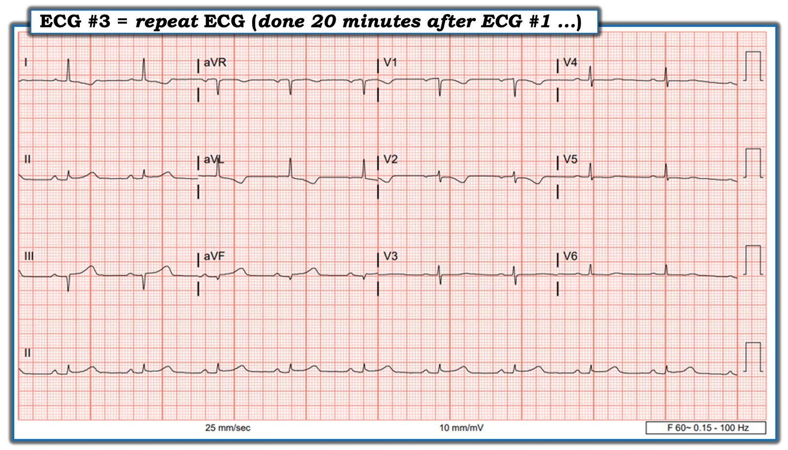
Điện tâm đồ #3 gần đạt tiêu chuẩn STEMI ở II, III và aVF. Sóng T đảo ngược ở vùng bên cao đang sâu thêm. Các điện cực V1 và V2 có lẽ vẫn đặt quá cao trên ngực — nhưng vẫn phù hợp với tổn thương vùng “sau”.
Tôi kích hoạt phòng thông tim — và ngay sau đó gọi cho bác sĩ tim mạch can thiệp. “Cảm ơn anh đã nghe máy, bệnh nhân nữ 71 tuổi trước đây khỏe mạnh, đau ngực lan vai trái một tiếng rưỡi — trên các điện tâm đồ liên tiếp có tắc động mạch vành cấp thành dưới đang tiến triển, nay ở ngưỡng STEMI dương tính kèm thay đổi soi gương ở vùng bên cao và vùng trước. Tôi nghĩ bà có thể có giảm động thành dưới. Tôi tin chắc bệnh nhân này đang có một biến cố típ 1 thành dưới, và cần vào phòng thông tim.”
Bác sĩ tim mạch can thiệp đồng ý — và bệnh nhân được chuyển gấp vào phòng thông tim. Tôi đã kích hoạt phòng thông tim cho bệnh nhân này trong vòng 30 phút sau lần đầu gặp bà — và 5 phút sau bà đã được chuyển đi.
- Kết quả troponin lần 1 có ngay sau khi bệnh nhân đã được chuyển vào phòng thông tim. Kết quả bình thường.
Kết quả thông tim:
Trong một thủ thuật kéo dài 2 giờ đầy thách thức về kỹ thuật, các kết quả sau đã được ghi nhận:

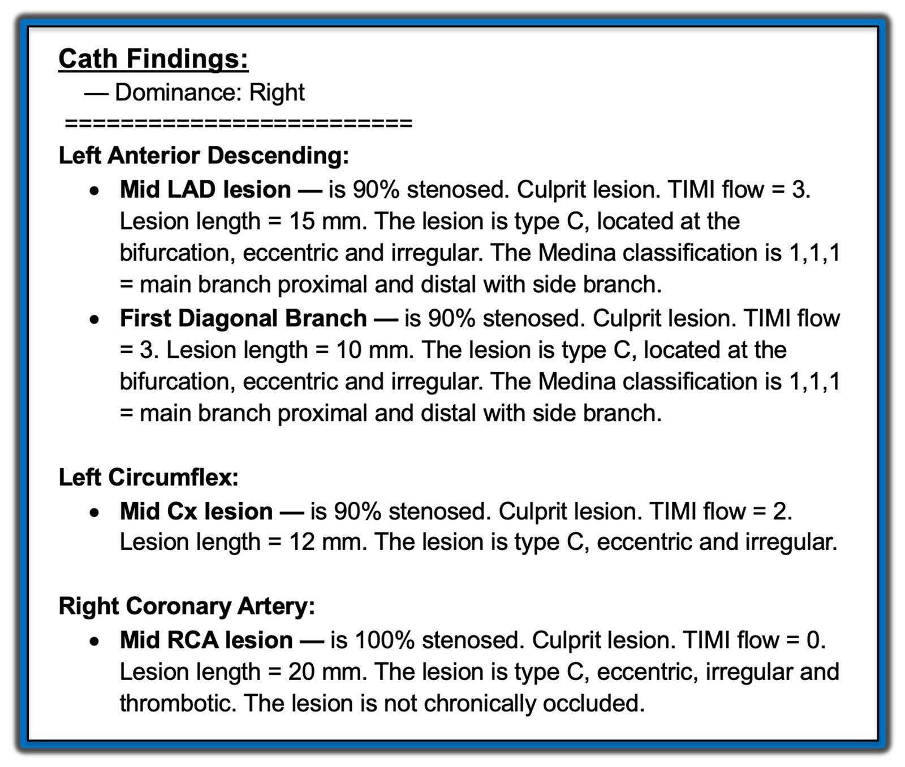

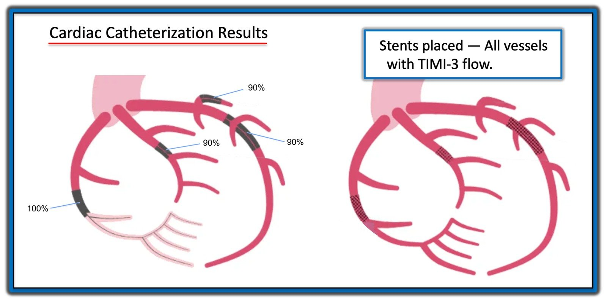
Dữ liệu bổ sung:
Siêu âm tim chính thức, làm vào ngày hôm sau — cho thấy phân suất tống máu 50-55%, rối loạn chức năng tâm trương độ 1, độ dày thành bình thường và giảm động thành dưới đoạn đáy và thành dưới-vách đoạn đáy.
- Bệnh nhân có EF tương tự và tình trạng chức năng tốt trên siêu âm tim làm lại một tháng sau.
Đánh giá của QOH (Queen of Hearts):
Trong khi xử trí ca này — tôi đã không nghĩ tới việc hỏi Queen of Hearts xem cô ấy nghĩ gì — có lẽ vì tôi đã có niềm tin chắc chắn của riêng mình về những gì đang diễn ra trên lâm sàng. Tôi đang xây dựng lập luận cho một hướng đi mà tôi sẽ theo đuổi dù thế nào đi nữa. Nhưng tôi đã hỏi QOH vào ngày hôm sau — và không ngạc nhiên khi cô ấy thể hiện độ tin cậy tăng dần qua các điện tâm đồ liên tiếp:

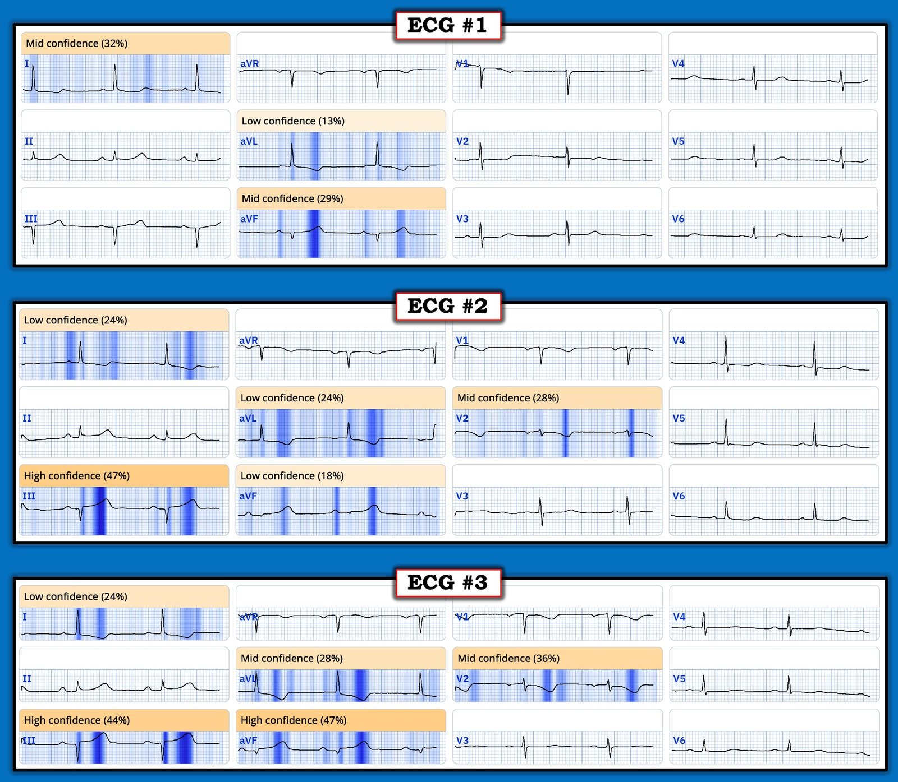
Suy ngẫm cuối cùng về CA BỆNH này:
Là một bác sĩ cấp cứu, đặc biệt là người làm việc chủ yếu vào ban đêm — tôi cảm thấy mình chỉ có một cơ hội tốt nhất để giúp bệnh nhân được tái thông mạch như họ cần. Ngay cả khi tôi tin chắc một bệnh nhân cần tái thông mạch, hướng hành động tốt nhất vẫn thay đổi tùy từng ca cụ thể. Kích hoạt phòng thông tim ngay khi tôi tin chắc bệnh nhân cần thông tim cấp cứu có thể có lợi cho tôi về mặt pháp lý y khoa — nhưng chưa chắc đã có lợi cho bệnh nhân. Đó là vì bác sĩ tim mạch can thiệp, có lẽ không bị điện tâm đồ thuyết phục — có thể yêu cầu đo troponin nhiều lần — hoặc thậm chí yêu cầu cho bệnh nhân dùng heparin và nhập vào khoa của họ, nơi bệnh nhân sẽ được đánh giá để thông tim vào một thời điểm nào đó sau này …
Đúng là tôi có thể kích hoạt lại phòng thông tim nếu bệnh nhân đạt tiêu chuẩn STEMI trên các điện tâm đồ ghi tiếp theo — nhưng không bao giờ có gì bảo đảm rằng vùng tổn thương sẽ tiến triển tới mức thỏa mãn tiêu chuẩn STEMI dựa trên milimét trên điện tâm đồ. Và ngay cả khi có — điều này có thể phải vài giờ (hoặc lâu hơn) sau mới xảy ra. Khuyến cáo ACC 2022 ghi nhận sóng T tối cấp là “tương đương STEMI” — nhưng hiện nay không có sự đồng thuận chung nào về thế nào là một “sóng T tối cấp”.
Smith: Như đã nói ở trên, giờ đây chúng tôi đã biết một cách định lượng thế nào là sóng T tối cấp
Ngay cả khi có đủ can đảm với niềm tin lâm sàng của mình, việc đem lại cho bệnh nhân sự chăm sóc tốt nhất có thể trong khuôn khổ mô hình STEMI đầy khiếm khuyết — và dạy học viên làm điều tương tự — vẫn là một nhiệm vụ đầy thách thức nhưng xứng đáng. Dù một điện tâm đồ đạt tiêu chuẩn STEMI kèm triệu chứng phù hợp với hội chứng vành cấp (ACS) có thể vẫn là “tấm vé” chắc chắn nhất đưa bệnh nhân vào phòng thông tim — tôi khuyến khích các bác sĩ nội trú của mình rèn con mắt nhìn “tính tương xứng và thay đổi soi gương” khi nhận diện thiếu máu cục bộ trên điện tâm đồ, thay vì đếm số milimét ST chênh lên.
Dù tôi kỳ vọng mô hình OMI sẽ tiếp tục được ưa chuộng hơn mô hình STEMI — tôi không cho rằng công việc của bác sĩ cấp cứu rốt cuộc sẽ thay đổi, đó là — Hình thành niềm tin chắc chắn về một bệnh nhân dựa trên bệnh sử, khám thực thể và dữ liệu thu thập được, rồi thực hiện đúng các hành động để bệnh nhân đó nhận được sự chăm sóc họ cần càng sớm càng tốt. Các điện tâm đồ liên tiếp thường sẽ cần thiết — và kỹ năng đọc điện tâm đồ sẽ luôn cần để nhận ra khi nào chúng là cần thiết.
======================================
BÌNH LUẬN CỦA TÔI, bởi KEN GRAUER, MD (16/7/2025):
Tôi thấy ca hôm nay của Emerson Floyd thật đáng khen ngợi — ở chỗ nó làm nổi bật những hiểu biết mà một bác sĩ cấp cứu tích lũy được qua năm thực tập và thời gian nội trú, và nay khi hành nghề với tư cách bác sĩ chính (Attending), truyền lại kiến thức đó cho các bác sĩ nội trú mà anh giảng dạy. Những gì ban đầu có vẻ là các dấu hiệu điện tâm đồ rất tinh tế — nay được Dr. Floyd nhận ra ngay tức thì là một OMI đang diễn ra.
- Tôi rất thích sự sâu sắc trong câu nói này của Dr. Floyd — “Tôi khuyến khích các bác sĩ nội trú của mình rèn con mắt nhìn tính tương xứng và thay đổi soi gương khi nhận diện thiếu máu cục bộ trên điện tâm đồ, thay vì đếm số milimét ST chênh lên.” Mô hình STEMI đầy khiếm khuyết thì đếm milimét. Đó là lý do nó bỏ sót hơn 1/3 tổng số OMI — và là lý do ngay cả với những ca nhồi máu được mô hình STEMI nhận ra, thường phải mất thêm nhiều giờ nữa sau khi mô hình OMI đã nhận diện biến cố đang diễn ra thì ST mới chênh lên đủ số milimét.
- Tôi cho rằng cách tiếp cận của Dr. Floyd trong ca hôm nay là một hình mẫu đáng noi theo. Anh ngay lập tức nghi ngờ cao một OMI cấp đang diễn ra chỉ trong vòng vài giây khi nhìn điện tâm đồ #1.
- Anh biết rằng “con đường nhanh nhất” cho việc ra quyết định của mình — là dành một phút nhanh gọn với bệnh nhân. Chỉ riêng dáng vẻ của bệnh nhân đã xác nhận một bệnh sử CP (đau ngực) đáng lo ngại — điều này, cùng với mức nghi ngờ cấp tính cao của Dr. Floyd từ điện tâm đồ ban đầu có nghĩa là bất kể điều gì có thể xảy ra tiếp theo (tức là, ngay cả khi troponin lần 1 và lần 2 âm tính — hay cơn đau ngực giảm — hay điện tâm đồ tiếp theo không cho thấy thay đổi nào) — bất kể điều gì có thể xảy ra tiếp theo, bệnh nhân này vẫn cần được thông tim kịp thời.
- Tất cả những gì còn lại là tìm ra con đường nhanh nhất để có thể thuyết phục bác sĩ tim mạch can thiệp giữa đêm rằng cần thông tim sớm nhất có thể.
Làm thế nào Dr. Floyd biết cần thông tim nhanh như vậy?
Để thuận tiện cho việc đánh giá — tôi đã đặt 3 bản ghi của ca hôm nay cạnh nhau trong Hình 1.
- Trong số các nguyên tắc Dr. Floyd áp dụng khi đánh giá nhanh điện tâm đồ ban đầu của ca hôm nay — là xem có một hay hai chuyển đạo nào mà anh biết ngay là bất thường ở một bệnh nhân đau ngực (CP) hay không. 2 chuyển đạo trong khung chữ nhật MÀU ĐỎ ở điện tâm đồ #1 lập tức lọt vào “mắt” tôi. Như thường gặp ở các chuyển đạo thành dưới — biên độ QRS không lớn (QRS rất nhỏ ở chuyển đạo aVF).
- Áp dụng “tính tương xứng” của Dr. Floyd — Chắc chắn không còn nghi ngờ gì rằng sóng T ở chuyển đạo aVF to quá mức không tương xứng = tối cấp (tức là, sóng T này ở aVF “béo” hơn ở đỉnh và rộng hơn ở đáy so với mong đợi khi xét kích thước rất nhỏ của QRS ở chuyển đạo này).
- Áp dụng nguyên tắc chuyển đạo lân cận — Với sóng T tối cấp ở chuyển đạo aVF — sóng T ở chuyển đạo III cũng to quá mức không tương xứng (và ở mức độ ít hơn — sóng T ở chuyển đạo thành dưới thứ 3 = chuyển đạo II — cũng lớn hơn mức đáng có khi xét kích thước rất nhỏ của QRS ở chuyển đạo II).
- Xác nhận OMI thành dưới cấp đến tiếp theo từ việc áp dụng “thay đổi soi gương” của Dr. Floyd — khi sóng ST-T ở chuyển đạo aVL biểu hiện hình ảnh soi gương ngược lại với sóng ST-T tối cấp ở chuyển đạo III.
- Như chúng tôi thường nhấn mạnh trên các trang này — thường có chung nguồn cấp máu cho thành dưới và thành sau thất trái — vì thế tôi luôn tìm bằng chứng OMI thành sau khi nghi ngờ OMI thành dưới (và ngược lại). Ở đây, nguyên tắc là bình thường phải có ST chênh lên nhẹ, dốc lên thoai thoải ở các chuyển đạo V2 và V3 — vậy mà ta lại thấy đoạn ST dẹt dạng bậc thềm (shelf-like), nếu không muốn nói là chênh xuống nhẹ, ở cả hai chuyển đạo này. Điều này về cơ bản xác nhận OMI thành sau cấp cho tới khi chứng minh được điều ngược lại.
XIN NHẤN MẠNH: Tại thời điểm này — Dr. Floyd biết phòng thông tim cần được kích hoạt. Nhưng vì muốn tối ưu khả năng thuyết phục một bác sĩ tim mạch lúc 4 giờ sáng đưa vào phòng thông tim một bệnh nhân mà bác sĩ này chưa gặp — Dr. Floyd cho rằng đáng bỏ thêm 20 phút để ghi 2 bản ghi liên tiếp, với hy vọng loại bỏ mọi khả năng nghi ngờ của bác sĩ tim mạch khi người này vẫn đang ở nhà.
- Những thay đổi trong Hình 1 mà ta thấy ở 2 điện tâm đồ tiếp theo có phần tinh tế, nhưng chắc chắn có hiện diện.
- Điểm MẤU CHỐT : Chẳng phải dễ hơn nhiều để nhận ra các thay đổi ST-T liên tiếp giữa các điện tâm đồ #1, 2 và 3 — khi ta xem từng chuyển đạo một với các bản ghi đặt ngay cạnh nhau sao? Quá dễ bỏ sót các thay đổi trên các điện tâm đồ liên tiếp khi không so sánh từng chuyển đạo với nhau.
- Khi so sánh từng chuyển đạo của 3 bản ghi trong Hình 1, cần thấy rõ — mức độ bất thường ST-T tăng dần từ điện tâm đồ #1 — sang điện tâm đồ #2 — rồi điện tâm đồ #3. Bác sĩ can thiệp đồng ý với đánh giá của Dr. Floyd — và tổng thời gian từ lúc bệnh nhân đến viện cho tới khi vào phòng thông tim không quá 35 phút!
- Và — troponin lần 1 bình thường! (nhưng điều này không có gì bất thường — và may mắn là điều đó không quan trọng! ).
==============================
Hình 1: So sánh 3 điện tâm đồ liên tiếp trong ca hôm nay.

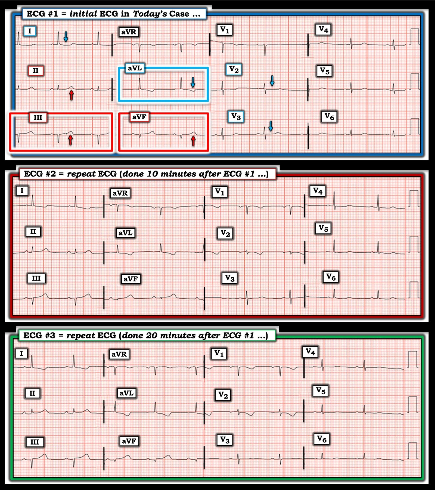
==============================